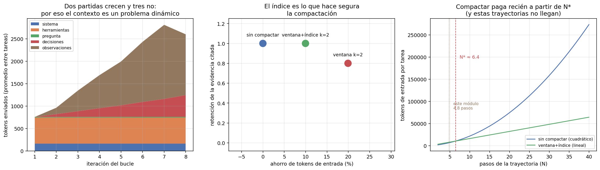

02 — Context engineering: el contexto como problema de asignación¶
La ventana no es memoria, es un presupuesto¶
La metáfora dominante —"la ventana de contexto es la memoria del modelo"— sugiere que el problema es de almacenamiento: si entra, está bien; si no entra, hay que achicar. Esa metáfora hace tomar decisiones malas, porque el problema real es de asignación: cada token que se gasta en una cosa desplaza a otra, y en un bucle agéntico el mismo token se paga muchas veces.
§1 dejó el planteo hecho: acotar la observación a 1.200 caracteres no perdía información, la cobraba en tokens, porque el agente necesitaba una iteración más y cada iteración reenvía la conversación entera. Esta sección mide eso sobre las mismas trayectorias y saca la regla de decisión.
Todo lo que sigue usa el tokenizador real del modelo (tiktoken, o200k_base), no
la regla de cuatro caracteres por token.
Las cinco partidas¶
El contexto de una iteración se reparte en cinco partidas, y lo que las distingue no es su tamaño sino cuáles crecen:
partida iteración 1 última iteración crece
------------------------------------------------------------
sistema 162 162 no
herramientas 580 580 no
pregunta 14 14 no
decisiones 0 250 sí
observaciones 0 944 sí
TOTAL 756 1950 ×2.6
Tres observaciones que cambian decisiones de diseño:
Los esquemas de herramientas son la partida más grande del arranque. 580 tokens contra 162 del prompt de sistema: las cuatro definiciones de herramientas pesan tres veces y media más que todas las instrucciones. Es la partida que sistemáticamente se olvida —no se escribe en ningún prompt, la serializa el proveedor— y se paga en todas las iteraciones. Agregar una quinta herramienta "por si acaso" no cuesta un poco: cuesta su esquema multiplicado por el largo de todas las trayectorias futuras.
Las observaciones son el 79% de lo que crece. 944 de los 1.194 tokens que se
suman entre la primera y la última iteración. Es coherente con §1: el texto que las
herramientas devuelven es la palanca grande, y por eso max_chars_observacion fue
uno de los dos factores del factorial.
El contexto final es una fracción de lo que se pagó. 1.950 tokens al terminar, pero la suma de todos los contextos enviados es mucho mayor. Eso es lo siguiente.

El multiplicador de reenvío¶
Cada iteración del bucle manda de nuevo todo el historial. El costo de entrada de una tarea no es el tamaño de su contexto final: es la suma de todos los contextos intermedios.
tarea pasos contexto final enviado total multiplicador
--------------------------------------------------------------
t-01 2 1,028 1,783 1.73
t-04 7 3,655 14,626 4.00
t-08 8 1,799 10,657 5.92
t-10 8 3,398 15,973 4.70
--------------------------------------------------------------
media 3.32
En promedio se paga 3,32 veces el contexto final; en la trayectoria más larga, 5,92. Y el número que ordena todo lo demás:
Del total enviado (85.654 tokens), el prefijo fijo —sistema + esquemas de herramientas + pregunta— se reenvió por 43.896 tokens: el 51,2% de todo el gasto de entrada del módulo.
La mitad del gasto de entrada de un agente es texto idéntico, reenviado. Eso tiene dos consecuencias que apuntan en direcciones opuestas y conviene no confundir:
- Es la razón por la que el caching de prefijo es la optimización de costo más rentable de un bucle agéntico, y no una micro-optimización. §8 la cuantifica.
- Es la razón por la que compactar la historia rinde menos de lo que parece: la compactación ataca la mitad del gasto que no es prefijo, y el prefijo no se toca.
Tres políticas de gasto¶
Con el problema planteado como asignación, las estrategias de compactación son políticas de gasto comparables:
| Política | Qué hace | Riesgo |
|---|---|---|
SinCompactar |
Todo lo que pasó sigue en contexto | Costo cuadrático en el número de pasos |
VentanaDeslizante(k) |
Conserva los últimos k pares y descarta el resto | Lo descartado no deja rastro: el agente repite trabajo sin enterarse |
VentanaConIndice(k) |
Conserva los últimos k y reemplaza el resto por una línea de índice, archivando el contenido en memoria externa | El agente tiene que acordarse de ir a buscarlo |
La tercera es la interesante porque convierte el problema de contexto en un
problema de retrieval —que es de lo que trata 02 entero—: en vez de tirar la
observación o arrastrarla, se guarda fuera y se deja en contexto lo justo para
saber que existe y cómo pedirla. El índice es literalmente esto, tomado de la
tarea t-04 en su última iteración:
[contexto compactado] Los pasos anteriores se archivaron en memoria externa. Índice:
- p0: buscar_corpus → 612 caracteres, menciona circular-01-sii-iva-digital.txt,
ley-02-ley-21210-modernizacion.txt, circular-05-sii-factura-electronica.txt
- p1: leer_norma → 2050 caracteres, menciona circular-01-sii-iva-digital.txt
- p2: leer_norma → 2053 caracteres, menciona ley-02-ley-21210-modernizacion.txt
- p3: buscar_corpus → 566 caracteres, menciona decreto-04-modificacion-presupuestaria.txt,
glosa-01-presupuesto-salud.txt
Si necesitás alguno completo, llamá a 'recuperar_memoria' con su clave.
Cinco líneas en lugar de 5.281 caracteres de observaciones, con los identificadores canónicos intactos.
Lo que dice la contabilidad¶
Recompactando el historial que el agente efectivamente produjo:
política tokens de entrada ahorro retención evidencia
--------------------------------------------------------------------------
sin compactar 85,654 0.0% 1.000
ventana k=2 68,583 19.9% 0.800
ventana+índice k=2 77,112 10.0% 1.000
Retención es la fracción de los documentos que el agente terminó citando que seguía visible en el contexto de la última iteración. La ventana pelada ahorra el doble y pierde un 20% de la evidencia: llega al final citando documentos que ya no puede ver. El índice cuesta la mitad del ahorro y recupera la retención completa.
La lección de diseño no es "compactá" sino "lo que se compacta tiene que dejar una dirección". Una línea por paso archivado, con los identificadores que menciona, es lo que separa una compactación segura de una que produce citas que el agente ya no puede sostener.
Pero la contabilidad no es el comportamiento¶
Acá es donde esta sección se salva de ser un ejercicio de aritmética. Todo lo anterior es un contrafáctico sobre trayectorias fijas: dice cuántos tokens se habrían enviado, no qué habría hecho el modelo. Con menos contexto, el agente decide distinto.
La corrida real, con la política de ventana+índice y la herramienta
recuperar_memoria disponible:
métrica sin compactar ventana+índice delta
--------------------------------------------------------------------------
acierto exacto 0.500 0.417 -0.083
F1 de docs citados 0.556 0.472 -0.083
pasos promedio 4.83 5.83 +1.00
tokens de entrada 69,896 78,325 +8,429
tareas sin respuesta 2 6 +4
llamadas a 'recuperar_memoria': 1
La contabilidad prometía un 10% de ahorro y la corrida real costó un 12% más. Y además bajó el acierto. Los tres mecanismos, en orden de tamaño:
- Compactar agregó un paso por tarea (4,83 → 5,83). Con menos historia visible, el agente vuelve a buscar lo que ya había buscado. Y un paso más no cuesta lo que se ahorró compactando: cuesta el prefijo completo otra vez, 757 tokens, más de lo que la compactación ahorró en esa iteración.
- La herramienta de memoria engorda el prefijo. Su esquema son 92 tokens que viajan en cada iteración de cada tarea, se use o no.
- El agente casi no usó la memoria: una sola llamada en doce tareas. Tenía el puntero en contexto y no lo siguió. Darle una salida de emergencia no alcanza para que la tome; eso es diseño de incentivos, no de capacidad, y es el mismo tipo de problema que §3 trata con los mensajes de error.
La regla de decisión: cuándo compactar sí paga¶
El resultado anterior no dice que compactar esté mal. Dice que se aplicó por debajo del punto de equilibrio, y ese punto se puede calcular con las constantes que ya se midieron.
Sin compactar, el contexto de la iteración i es P + i·h —prefijo fijo más
historia acumulada— así que el total de una trayectoria de N pasos es
donde s es el sobrecosto de compactar. Los tres parámetros están medidos, no
supuestos:
prefijo fijo por iteración (P) : 757 tokens
historia agregada por paso (h) : 311 tokens
sobrecosto de compactar (s) : 225 tokens/iteración (92 de esquema + 133 de índice)
Una cuadrática cruza a una lineal en algún punto, y acá es
N* = 1 + 2(s + k·h)/h ≈ 6.4 pasos
N pasos sin compactar ventana+índice ahorro
----------------------------------------------------
4 4,896 6,419 -31.1%
6 9,212 9,628 -4.5%
8 14,774 12,838 13.1%
16 49,479 25,675 48.1%
32 178,679 51,350 71.3%
48 387,602 77,025 80.1%
Las trayectorias de este módulo promedian 4,8 pasos. Están por debajo de N*, y por eso compactar costó plata en vez de ahorrarla — exactamente lo que midió la corrida real. A 32 pasos, la misma política ahorra 71%.
Regla: compactar es una inversión con costo fijo por iteración y ahorro creciente con el largo de la trayectoria. Con
N ≈ 5no se recupera; conN ≈ 30es la diferencia entre un producto viable y uno que no. Antes de aplicarla, medíP,hy el largo típico de tus trayectorias: son tres números y salen de las mismas trazas que ya tenés.
Y el corolario incómodo para la práctica habitual: la compactación es una función
que casi todos los frameworks de agentes traen activada por defecto, con un umbral
fijo, sin conocer ni P ni h ni la distribución de largos del caso de uso.
Memoria externa es retrieval, y ya sabemos hacer retrieval¶
La conexión con 02 no es una analogía: es la misma operación. Una observación
archivada con una línea de índice es un documento con su metadata; recuperarla por
clave es un filtro de metadatos (02 §7); recuperarla por contenido sería
búsqueda. Todo lo que 02 estableció aplica — incluido su resultado más útil, que
la mayoría de las consultas se resuelven con un filtro estructurado y no hace falta
nada más caro.
Lo que este módulo agrega es la parte que 02 no tenía que resolver: quién
decide cuándo recuperar. En un pipeline RAG lo decide el programador, siempre, en
el mismo lugar. En un bucle agéntico lo decide el modelo, y la única llamada a
recuperar_memoria en doce tareas dice que esa decisión no se toma sola.
Estado del arte (2026)¶
| Aspecto | Estado | Detalle |
|---|---|---|
| Contexto como recurso a administrar | ✅ Consenso | "Context engineering" desplazó a "prompt engineering" como marco dominante |
| Compaction automática en frameworks | 🟢 Estándar | Presente por defecto; los umbrales rara vez se calibran contra el caso de uso |
| Caching de prefijo del proveedor | 🟢 Maduro | Ataca el 51% del gasto que este módulo midió; ver §8 |
| Memoria externa direccionable | 🟡 En adopción | Fácil de exponer, difícil de lograr que el agente la use |
| Degradación con contexto largo | 🟡 Documentada, mal medida | Se reporta pérdida de atención en contextos largos; la magnitud depende mucho del modelo y la tarea |
| Punto de equilibrio de compactar, publicado | 🔴 Raro | Se recomienda compactar sin decir a partir de qué largo conviene |
Límites de esta medición¶
- 12 tareas, un modelo, una réplica. Los deltas de acierto (±0,083) son una tarea que cambia de signo. Lo robusto acá es la aritmética del presupuesto —el 51,2% de prefijo reenviado, el multiplicador 3,32, el N* ≈ 6,4—, que no depende del modelo sino de la estructura del bucle.
P,hysson de este harness. Con más herramientas,Psube y N baja; con observaciones más largas,hsube y N baja también. La fórmula se traslada, los números no.- La parte de contabilidad es un contrafáctico, y su discrepancia con la corrida real (−10% previsto contra +12% observado) es justamente el resultado que vale la pena leer: la retroalimentación del comportamiento domina al ahorro contable.
k=2no está optimizado. No se barrió el parámetro; se eligió el valor más agresivo razonable para que el efecto fuera visible.
Lo que viene en la próxima sección¶
Dos cabos sueltos apuntan al mismo lugar. Los esquemas de herramientas resultaron
la partida fija más cara (580 de 756 tokens), y t-08 de §1 sigue fallando porque
vecinos_grafo devuelve un salto de un tipo de relación por llamada. Las dos son
la misma pregunta: cuál es la unidad correcta de delegación. §3 trata la
herramienta como un contrato y mide qué pasa cuando la granularidad está mal
elegida.
Conexiones¶
04 §1(prefill/decode): el prefijo reenviado es exactamente la fase de prefill, la barata por token — y aun así es el 51,2% del gasto de entrada. Que sea prefill es también lo que lo hace cacheable (§8).03 §4(caching multinivel): aquel capítulo cachea respuestas; el bucle agéntico necesita cachear prefijos, que es otra capa y ataca otra cosa.02 §7(metadata estructurado): recuperar una observación archivada por clave es el mismo filtro barato que ahí se defendió frente a alternativas caras.02completo: memoria externa es retrieval. Lo nuevo es que el que decide recuperar es el modelo, no el programador.- §1: las trayectorias que se miden acá son las que produjo el factorial de esa sección; el "cuesta más iteraciones" que allá quedó como observación, acá tiene una fórmula y un punto de corte.
- §8: el 51,2% de prefijo reenviado es el insumo del cálculo de caching de prefijo, y el largo de trayectoria es la variable que gobierna la varianza del costo por tarea.